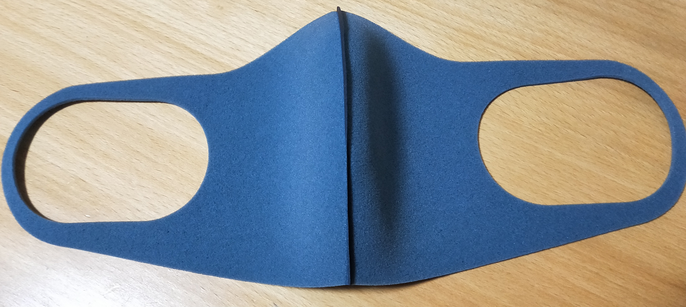

はじめに
最近様々なマスクを見かけるようになりましたが、本稿で取り扱うマスクは、タイトルの通り 『再利用可能』 なものです。
いわゆる、コロナ禍におけるマスク不足に端を発して、使い捨てマスクではなく使用後の手洗い等によって再び使用するタイプのマスクが増えてきました。 最近ではただただ再利用可能なだけではなく、様々な機能性を追求したものが開発されており、ユニクロの「エアリズムマスク」への期待などはまさにそれを象徴するものだと思います。
日々目の前を通過していくマスクの情報を小まめにメモしていたのですが、それを纏めたいと思います。
(updated 2020.07.26) 旧形式である一覧表は、過去記事という扱いで分離しました。 一覧表に記載の情報と紹介ニュース、紹介記事のブログカードを1組にした情報を上から順に列挙する形に変更いたします。
もし皆様の中で、こんなマスク有るよという情報がございましたら、是非教えて頂ければと思います。
マスク情報
略記のルールについては、略記についてを参照下さい。
なお、情報の正確性は『「自分が利用するために」纏めている』ということでご理解下さい。
- 間違っていても責任は負えません。
- が、自分を騙すような趣味もありません。
エアリズムマスク
| メーカー・ブランド | 機能性 | 回数 | 素材 | 価格 | 枚数 | 単価 |
| ユニクロ | 菌UV | 990 | 3 | 330 |
ユニクロ「エアリズムマスク」、次回から購入制限を「全サイズのうち1点のみ」に - PHILE WEB
ユニクロ「エアリズムマスク」、次回から購入制限を「全サイズのうち1点のみ」に PHILE WEB
PHILE WEB
繰り返し 使える ２枚組・三層マスク
| メーカー・ブランド | 機能性 | 回数 | 素材 | 価格 | 枚数 | 単価 |
| 無印良品 | 30 | 綿 | 999 | 2 | 500 |
遂に出た無印の布マスク、予想を超えて相当コスパいいです！
ウイルス対策として必需品となったマスクですが、最近は様々な布マスクが発売されるようになりました。 今回は、無印良品から新発売された、抗菌加工のある布マスク『繰り返し使える三層マスク』をご紹介します！ Beautyまとめ
Beautyまとめ
洗って使えるフィットマスク
| メーカー・ブランド | 機能性 | 回数 | 素材 | 価格 | 枚数 | 単価 |
| AEON | 冷UV蒸 | ポ | 398 | 1 | 398 |
1枚398円。つけた瞬間ひんやり＆ムレにくい「洗って使えるフィットマスク」販売です。 | sotokoto online（ソトコトオンライン）
 ソトコト
ソトコト
ひやマスク
| メーカー・ブランド | 機能性 | 回数 | 素材 | 価格 | 枚数 | 単価 |
| AEON | 冷 | ポ | 1200 | 2 | 600 |
イオンの夏用「ひやマスク」に新色登場 予約販売スタート
イオングループのアパレル専門店「コックス」の夏用マスク「ひやマスク」に新色が登場します。 2020年6月10日の15時から、コックス公式オンラインストアにて予約販売が行われています。 東京バーゲンマニア
東京バーゲンマニア
ぴたマスク
| メーカー・ブランド | 機能性 | 回数 | 素材 | 価格 | 枚数 | 単価 |
| AEON | ポ | 1200 | 3 | 400 |
【夏用マスク】冷たくて洗えるコックスの「ぴたマスク」を使ってみた | サンキュ！
今回は、予約注文していたコックスの夏用マスク「ぴたマスク」が届いたので付け心地をご紹介いたします！ つけた瞬間、思わず『つめたっ』と言ってしまうほどこれまで使用していたマスクとは大違いでした。
パステルマスク
| メーカー・ブランド | 機能性 | 回数 | 素材 | 価格 | 枚数 | 単価 |
| AEON | 冷 | 858 | 3 | 286 |
“イオンのマスク”、つけ心地が快適すぎる ユニクロや無印製品にはない利点も
全国的に気温が上がり、よりつけ心地の良いマスクが求められている。そうした中で注目が集まっているのが、イオンスタ… ニュースサイトしらべぇ
ニュースサイトしらべぇ
抗菌・洗えるマスク
| メーカー・ブランド | 機能性 | 回数 | 素材 | 価格 | 枚数 | 単価 |
| アオキ | 菌 | 30 | 3990 | 20 | 200 |
紳士服のAOKIが「ダブル抗菌・洗えるクールマスク」の抽選販売を6/15(月)開始！ 抽選は全3回、の抽選を行い、より多くのお客様へお届け
紳士服の製造・販売でおなじみの株式会社AOKIは、新発売の「ダブル抗菌・洗えるクールマスク」の追加販売を行います。 ネタとぴ
ネタとぴ
ダブル抗菌・洗えるクールマスク
| メーカー・ブランド | 機能性 | 回数 | 素材 | 価格 | 枚数 | 単価 |
| アオキ | 冷菌 | 30 | 4000 | 20 | 200 |
AOKIが「ダブル抗菌・洗えるクールマスク」の追加販売を実施 8万人分
AOKIは事前抽選販売が好評だったため「ダブル抗菌・洗えるクールマスク（20枚入り）」（税別4000円）の追加販売を行うと発表した。 ITmedia �r�W�l�X�I�����C��
ITmedia �r�W�l�X�I�����C��
クールプレストマスク
| メーカー・ブランド | 機能性 | 回数 | 素材 | 価格 | 枚数 | 単価 |
| はるやま | 冷臭菌乾UV | 50 | 1078 | 1 | 1078 |
はるやま、冷感ひんやりマスク「クールプレストマスク」発売。吸水速乾で繰り返し洗える
はるやま商事は、接触冷感素材を採用し、自宅で洗って繰り返し着用可能な布マスク「クールプレストマスク」を「はるやま」「PerfectSuitFActory」のオンラインショップと一部店舗で6月12日から販売する。 トラベル Watch
トラベル Watch
TioTioプレミアム洗える立体マスク
| メーカー・ブランド | 機能性 | 回数 | 素材 | 価格 | 枚数 | 単価 |
| 青山 | 臭ウイルス菌カビ | ポ | 590 | 1 | 590 |
洋服の青山 「TioTioプレミアム洗える立体マスク」の第3回抽選販売を実施中 ― 応募は6月14日23時59分まで [インターネットコム]
洋服の青山は、抗菌スーツの加工技術を活用した「TioTioプレミアム洗える立体マスク」の第3回抽選販売を実施中。応募は6月14日23時59分まで。 インターネットコム [ライフナビメディア]
インターネットコム [ライフナビメディア]
水着素材マスク
| メーカー・ブランド | 機能性 | 回数 | 素材 | 価格 | 枚数 | 単価 |
| TAKA-Q | 乾UV | ポ | 1500 | 3 | 500 |
タカキューの夏マスク、7月中旬発売。清涼スーツの表地や水着素材を使用。ネット販売予約受付中
紳士服・婦人服・関連洋品雑貨の企画・販売を手がけるタカキュー（TAKA-Q）は、素材に接触冷感素材を採用した夏仕様の機能系マスク「SUMMER MASK」シリーズを販売する。 トラベル Watch
トラベル Watch
シャツ生地を使った繰り返し洗える立体マスク
| メーカー・ブランド | 機能性 | 回数 | 素材 | 価格 | 枚数 | 単価 |
| KONAKA | ポ | 980 | 1 | 980 |
コナカがワイシャツ生地の「洗える立体マスク」を発売、内側にフィルター用ポケットを設置
「紳士服コナカ」を展開するコナカが、ワイシャツ素材を使用したマスク「洗える立体マスク」を発売する。現在、コナカと「スーツセレクト（SUIT SELECT）」の公式オンラインストアで予約を受け付けている。 FASHIONSNAP.COM [ファッションスナップ・ドットコム]
FASHIONSNAP.COM [ファッションスナップ・ドットコム]
マウスカバー
| メーカー・ブランド | 機能性 | 回数 | 素材 | 価格 | 枚数 | 単価 |
| ミズノ | ポ | 850 | 1 | 850 |
ミズノのマスク「マウスカバー」追加抽選販売決定。応募は6月19日～29日まで
総合スポーツ用品メーカーのミズノは、水着素材を採用した「マウスカバー」の追加販売を決定。応募は6月19日～29日まで イベントチェッカー
イベントチェッカー
スポーツフェイスマスク
| メーカー・ブランド | 機能性 | 回数 | 素材 | 価格 | 枚数 | 単価 |
| YONEX | 3993 | 4 | 998 |
ヨネックス「スポーツフェイスマスク(AC480)」公式ネットショップで6月15日発売。4枚組3,993円
2020年6月15日(月)正午12時から、総合スポーツ用品メーカーのヨネックスは、公式オンラインショップで「スポーツフェイスマスク(AC480)」の販売を開始します。 イベントチェッカー
イベントチェッカー
アイスタッチ マウスカバー
| メーカー・ブランド | 機能性 | 回数 | 素材 | 価格 | 枚数 | 単価 |
| ミズノ | 冷 | ポ | 850 | 1 | 850 |
「ミズノ」スポーツの機能性を活かした、涼感素材「アイスタッチ」マウスカバー発売！
「MIZUNO（ミズノ）」が、第二弾マウスカバーの再販分と、熱を素早く逃して心地いい清涼感があり、アンダーウエアやスポーツウエアに1998年から使用されているミズノ独自開発の夏向け素材「アイスタッチ」を使用したマスクの購入申し込みをスタート。6月29日10:00まで。 TABI LABO
TABI LABO
ＵＡスポーツマスク
| メーカー・ブランド | 機能性 | 回数 | 素材 | 価格 | 枚数 | 単価 |
| アンダーアーマー | 3000 | 1 | 3000 |
アンダーアーマーのスポーツマスクを試す。普段使いも快適【いつモノコト】
新しい生活様式が求められるこの頃。どこへ行くにもマスクが必要だ。電車に乗る時、店に入る時など、新型コロナウイルスの感染拡大を防ぐのはもとより、「マナー」「エチケット」的な側面で、2020年7月の東京は、マスクが必須な状況にある。 Impress Watch
Impress Watch
洗える超伸縮さらピタフィットマスクCOOL２枚組
| メーカー・ブランド | 機能性 | 回数 | 素材 | 価格 | 枚数 | 単価 |
| TAKUMIBA | 冷蒸UV | 50 | ウ | 1200 | 2 | 600 |
夏用クールタイプ、洗える超伸縮フィットマスクの販売がスタート！ | MADURO ONLINE（マデュロオンライン）
老舗日本製ストレッチパンツ専門工房の「TAKUMIBA（タクミバ）」は、ECサイト「TAKUMIBA DIRECT STORE」にて、洗える超伸縮FIT MASK ”さらピタCOOLタイプ”の販売を5/27より予約販売を開始。サイズ展開に子ども用も追加。 MADURO ONLINE（マデュロオンライン）
MADURO ONLINE（マデュロオンライン）
PITTA MASK
| メーカー・ブランド | 機能性 | 回数 | 素材 | 価格 | 枚数 | 単価 |
| ARAX | 3 | ウ | 512 | 3 | 170 |
メイドインジャパンの洗える和紙マスク
| メーカー・ブランド | 機能性 | 回数 | 素材 | 価格 | 枚数 | 単価 |
| ファクトリエ | 和紙 | 1900 | 1 | 1900 |
「メイドインジャパンの和紙マスク」を発売 〜何度も洗って使える、ウォッシャブル仕様〜 4月上旬より順次発送開始
Factelier（ファクトリエ）のプレスリリース（2020年3月13日 19時47分）[メイドインジャパンの和紙マスク]を発売 ～何度も洗って使える、ウォッシャブル仕様～ 4月上旬より順次発送開始 プレスリリース・ニュースリリース配信シェアNo.1｜PR TIMES
プレスリリース・ニュースリリース配信シェアNo.1｜PR TIMES
WHOLEGARMENT MASK +AG SHEET
| メーカー・ブランド | 機能性 | 回数 | 素材 | 価格 | 枚数 | 単価 |
| TO&FRO | ポ | 3300 | 1 | 3300 |
トラベルギアブランドの「マスク」がすごい！その理由に納得
トラベルギアブランド「TO&FRO」がマスクの販売を開始。 TABI LABO
TABI LABO
みんなの夏マスク
| メーカー・ブランド | 機能性 | 回数 | 素材 | 価格 | 枚数 | 単価 |
| TO&FRO | 1650 | 1 | 1650 |
トリプル冷却「真夏のマスク」誕生！ 抗菌、ひんやり、サラサラで夏も楽々。
トラベルグッズブランド「TO＆FRO（トゥーアンドフロー）」のオンラインショップでは2020年7月9日から11日の3日間、夏に起こりやすいマスク着用時のトラブルを軽くする「真夏の夏マスク」の予約販売を行います。 また、5月に販売し、人気商品となった「みんなの夏マスク」も6月25日から再販されます。 東京バーゲンマニア
東京バーゲンマニア
真夏の夏マスク
| メーカー・ブランド | 機能性 | 回数 | 素材 | 価格 | 枚数 | 単価 |
| TO＆FRO | 冷菌臭乾 | 1750 | 1 | 1750 |
トリプル冷却「真夏のマスク」誕生！ 抗菌、ひんやり、サラサラで夏も楽々。
トラベルグッズブランド「TO＆FRO（トゥーアンドフロー）」のオンラインショップでは2020年7月9日から11日の3日間、夏に起こりやすいマスク着用時のトラブルを軽くする「真夏の夏マスク」の予約販売を行います。 また、5月に販売し、人気商品となった「みんなの夏マスク」も6月25日から再販されます。東京バーゲンマニア
キテテコマスク ホワイト
| メーカー・ブランド | 機能性 | 回数 | 素材 | 価格 | 枚数 | 単価 |
| オールユアーズ | 50 | 綿 | 2200 | 1 | 2200 |
50回洗っても効果が持続する抗菌・消臭マスク「オールユアーズ」が予約を再開
アパレルブランド「ALL YOURS」が、50回洗っても効果が持続する抗菌・消臭マスク「キテテコマスク」 の予約を今月10日から再開。 TABI LABO
TABI LABO
Suriv
| メーカー・ブランド | 機能性 | 回数 | 素材 | 価格 | 枚数 | 単価 |
| ニッセイエブロ | 30 | 綿 | 1480 | 5 | 296 |
「抗菌ファブリックマスク」が老舗デザイン会社から発売【5月9日】
官公庁の広告宣伝・販売促進・ブランディングなどを手がける創業76年の老舗デザイン会社「ニッセイエブロ」が、5月9日（土）、抗菌ファブリックマスク「Suriv（スリーヴ）」を発売。 TABI LABO
TABI LABO
洗えるウレタンマスク
| メーカー・ブランド | 機能性 | 回数 | 素材 | 価格 | 枚数 | 単価 |
| イノアック | ウ | 1480 | 5 | 296 |
即完売の日本製の洗えるウレタンマスク【5月2日再販開始！】
相変わらず、品薄状態が続いているマスク。最近は少しずつ供給も始まってきていますが、それでもなかなか「日本製」に出会うことは難しい……。そんな中、日本で初めてウレタンフォームの生産を始めたウレタンメーカ イエモネ
イエモネ
洗えるオリジナルマスク
| メーカー・ブランド | 機能性 | 回数 | 素材 | 価格 | 枚数 | 単価 |
| ドムドム | 1480 | 3 | 494 |
ドムドムハンバーガー洗えるマスクのネット通販での予約・購入方法をチェック！｜わたし出すわ
ハンバーガーチェーン、ドムドムハンバーガーがオリジナルマスクを5月25日から販売し話題にになっています。 残念ながら、初 わたし出すわ
わたし出すわ
超立体COLD MASK
| メーカー・ブランド | 機能性 | 回数 | 素材 | 価格 | 枚数 | 単価 |
| ギャレリア | ポ | 1078 | 1 | 1078 |
「超立体COLD MASK」で限定カラー、6月30日にシルキーホワイト発売へ（BCN） - Yahoo!ニュース
ギャレリアインターナショナルは、ひんやりとして快適に使える「超立体COLD MASK（コールドマスク）」の限定カラー「シルキーホワイト」を6月30日に発売する。 新型コロナウイルスの影 Yahoo!ニュース
Yahoo!ニュース
オーガニックコットン立体3重ガーゼマスク
| メーカー・ブランド | 機能性 | 回数 | 素材 | 価格 | 枚数 | 単価 |
| 中川政七商店 | 綿 | 2640 | 1 | 2640 |
中川政七商店、オーガニックコットン素材の夏用マスク(大人用・子供用)オンライン販売開始。日本製・洗濯可
2020年6月5日(金)中川政七商店(なかがわまさしちしようてん)は、オンラインショップにて「オーガニックコットン立体3重ガーゼマスク NADELL×中川政七商店(大人用・子供用)」の予約販売開始。 イベントチェッカー
イベントチェッカー
西川だからつくれるこだわりマスク COOL 接触冷感素材
| メーカー・ブランド | 機能性 | 回数 | 素材 | 価格 | 枚数 | 単価 |
| 西川 | 冷乾 | 100 | ポ | 2000 | 2 | 1000 |
大好評『西川の100回洗えるマスク』から新たにクールタイプとL（大判）サイズが登場！さらに、『西川だからつくれるこだわりマスク』2種類も発売！
西川株式会社のプレスリリース（2020年6月9日 10時00分）大好評『西川の100回洗えるマスク』から新たにクールタイプとL（大判）サイズが登場！さらに、『西川だからつくれるこだわりマスク』2種類も発売！ プレスリリース・ニュースリリース配信シェアNo.1｜PR TIMES
プレスリリース・ニュースリリース配信シェアNo.1｜PR TIMES
西川だからつくれるこだわりマスク 涼感 麻素材
| メーカー・ブランド | 機能性 | 回数 | 素材 | 価格 | 枚数 | 単価 |
| 西川 | 冷蒸 | 100 | 麻 | 2400 | 2 | 1200 |
大好評『西川の100回洗えるマスク』から新たにクールタイプとL（大判）サイズが登場！さらに、『西川だからつくれるこだわりマスク』2種類も発売！
西川株式会社のプレスリリース（2020年6月9日 10時00分）大好評『西川の100回洗えるマスク』から新たにクールタイプとL（大判）サイズが登場！さらに、『西川だからつくれるこだわりマスク』2種類も発売！プレスリリース・ニュースリリース配信シェアNo.1｜PR TIMES
接触冷感マスク
| メーカー・ブランド | 機能性 | 回数 | 素材 | 価格 | 枚数 | 単価 |
| EDWN | 冷 | 550 | 1 | 550 |
夏用おしゃれマスク最新作！ エドウインのクールデニム登場（MEN’S NON-NO WEB） - Yahoo!ニュース
6/19よりエドウインの公式オンラインショップで、特製COOLデニム素材を使用した接触冷感マスクが500円（税別）で数量限定販売される。通常の商品購入との合わせ買い対象となり、マスクの売上は新型コロ Yahoo!ニュース
Yahoo!ニュース
365日マスク ウィルシュータ
| メーカー・ブランド | 機能性 | 回数 | 素材 | 価格 | 枚数 | 単価 |
| 宏福商事合同会社 | ウイルス | 365 | 3650 | 2 | 1825 |
宏福商事、「1日5円の365回洗って繰り返し使える布マスク」を店頭販売決定！
宏福商事合同会社のプレスリリース（2020年7月4日 18時55分）宏福商事、[1日5円の365回洗って繰り返し使える布マスク]を店頭販売決定！ プレスリリース・ニュースリリース配信シェアNo.1｜PR TIMES
プレスリリース・ニュースリリース配信シェアNo.1｜PR TIMES
洗える伸縮マスク
| メーカー・ブランド | 機能性 | 回数 | 素材 | 価格 | 枚数 | 単価 |
| 株式会社KBSコーポレーション | 臭乾 | 1800 | 1 | 1800 |
速乾性に消臭効果も備えたスポーツウェア素材の「洗える伸縮マスク」。好評につき継続販売決定！
株式会社KBSコーポレーションのプレスリリース（2020年5月31日 11時00分）速乾性に消臭効果も備えたスポーツウェア素材の[洗える伸縮マスク]。好評につき継続販売決定！ プレスリリース・ニュースリリース配信シェアNo.1｜PR TIMES
プレスリリース・ニュースリリース配信シェアNo.1｜PR TIMES
Bio Face
| メーカー・ブランド | 機能性 | 回数 | 素材 | 価格 | 枚数 | 単価 |
| LIMEX | 30 | 1500 | 1 | 1500 |
TBM、Bioworks、新型コロナウイルス対策の新たなシリーズ商品として、植物由来の糸で編んだ、洗える抗菌マスク 「Bio Face Lite」を発表
TBMのプレスリリース（2020年6月12日 15時00分）TBM、Bioworks、新型コロナウイルス対策の新たなシリーズ商品として、植物由来の糸で編んだ、洗える抗菌マスク [Bio Face Lite]を発表 プレスリリース・ニュースリリース配信シェアNo.1｜PR TIMES
プレスリリース・ニュースリリース配信シェアNo.1｜PR TIMES
KLON Ag+ MASK
| メーカー・ブランド | 機能性 | 回数 | 素材 | 価格 | 枚数 | 単価 |
| KLON | 冷菌 | 2948 | 1 | 2948 |
KLONより『高純度の銀イオン加工繊維を使用した超抗菌マスク』、KLON Ag+ MASKが2020年5月25日(月)販売開始！
株式会社タイタン・アートが運営するファッションブランド「KLON」より、機能×ファッションが融合したマスク『KLON Ag+ MASK』を発売しましたことをお知… SankeiBiz
SankeiBiz
MASCOOL Ag+/マスクール
| メーカー・ブランド | 機能性 | 回数 | 素材 | 価格 | 枚数 | 単価 |
| レイズラボ | 菌ウイルス臭 | 50 | 1650 | 1 | 1650 |
防災ニュース - ひんやり夏用マスクの決定版！冷感＆抗菌・抗ウイルス＆消臭効果もプラスした「MASCOOL Ag+/ マスクール」
マスク不足や夏の熱中症対策に対応するため、洗って繰り返し使える、冷感素材のマスクがいろいろな会社から発売されていますね。そのなかでも特に気になる、抗菌・抗ウイルス＆消臭効果を併せ持ち、綿100%で肌触... | moshimo ストックは「もしも」ための防災サイトです。初めての方にもわかりやすく災害・備蓄についての情報をお届けします。 moshimo ストック
moshimo ストック
ナノクール抗菌マスク
| メーカー・ブランド | 機能性 | 回数 | 素材 | 価格 | 枚数 | 単価 |
| サムライワークス | 冷菌臭 | 50 | 1480 | 1 | 1480 |
冷感・抗菌・飛沫防止機能を持つ夏マスク「ナノクール抗菌マスク」追加予約販売開始 [インターネットコム]
TioTio Premium加工を採用した「ナノクール抗菌マスク」の追加予約販売が開始されました。冷感・抗菌・飛沫防止という、夏マスクに求められる機能“全部入り”の商品です。 インターネットコム [ライフナビメディア]
インターネットコム [ライフナビメディア]
ハイドロ銀チタン(R)ソフトガーゼマスク
| メーカー・ブランド | 機能性 | 回数 | 素材 | 価格 | 枚数 | 単価 |
| ADI.G | 100 | 綿 | 980 | 1 | 980 |
【肌に優しい綿100%】繰り返し洗えるガーゼマスク「ハイドロ銀チタン(R)ソフトガーゼマスク」が6月22日より販売開始
東京都新宿区に本社を構えるDR.C医薬株式会社は、繰り返し洗って使えるガーゼマスク「ハイドロ銀チタン(R)ソフトガーゼマスク」を6月22日（月）より販売開始。詳細をご紹介します。 Daily Shinjuku
Daily Shinjuku
洗える夏用絹マスク
| メーカー・ブランド | 機能性 | 回数 | 素材 | 価格 | 枚数 | 単価 |
| 京都きもの京小町 | 絹 | 2200 | 1 | 2200 |
累計25,000枚販売突破のシルクのマスクシリーズに新柄登場！
株式会社マルヒサのプレスリリース（2020年6月11日 10時00分）累計25,000枚販売突破のシルクのマスクシリーズに新柄登場！ プレスリリース・ニュースリリース配信シェアNo.1｜PR TIMES
プレスリリース・ニュースリリース配信シェアNo.1｜PR TIMES
冷感ひんやり夏マスク
| メーカー・ブランド | 機能性 | 回数 | 素材 | 価格 | 枚数 | 単価 |
| カラフル株式会社 | 冷UV | ポ | 980 | 1 | 980 |
【シリーズ累計販売数60万枚】1枚170円の冷感夏用マスクの子供用をリリースいたしました。
カラフル株式会社のプレスリリース（2020年7月11日 12時48分） シリーズ累計販売数60万枚 1枚170円の冷感夏用マスクの子供用をリリースいたしました。 プレスリリース・ニュースリリース配信シェアNo.1｜PR TIMES
プレスリリース・ニュースリリース配信シェアNo.1｜PR TIMES
くりかえし使えるマスク
| メーカー・ブランド | 機能性 | 回数 | 素材 | 価格 | 枚数 | 単価 |
| KING JIM | 1320 | 1 | 1320 |
KING JIMファン注目！「くりかえし使えるマスク」ヨドバシ・ドット・コムで販売中です [インターネットコム]
テプラなどを販売する文房具メーカーKING JIMから「くりかえし使えるマスク」が販売されています。KING JIMのファンは買うしかない？ インターネットコム [ライフナビメディア]
インターネットコム [ライフナビメディア]
COOLIST
| メーカー・ブランド | 機能性 | 回数 | 素材 | 価格 | 枚数 | 単価 |
| 岡田商会 | 冷蒸乾 | ポ |
ひんやり快適な新素材の夏マスク！汗を吸収・蒸散する速さはコットンの5倍｜ウォーカープラス
大阪の岡田商会は自社オンラインショップ「MAMOL(マモル)」にて、アメリカ生まれの新素材を使った夏マスク「COOLIS… ウォーカープラス（Walkerplus）
ウォーカープラス（Walkerplus）
東京マウスウェア
| メーカー・ブランド | 機能性 | 回数 | 素材 | 価格 | 枚数 | 単価 |
| モンステラ | 冷UV乾 | 840 | 1 | 840 |
シンデレラフィットな夏用マスク！？ 「東京マウスウェア」、コスパよさげ。
ECサイト「モンステラ」を運営するF1researchと洋服の補修・加工を請け負うコッコパッソによる夏用接触冷感素材マスク「東京マウスウェア」が、モンステラ公式ストアで一般販売を始めています。 東京バーゲンマニア
東京バーゲンマニア
フリルマスク
| メーカー・ブランド | 機能性 | 回数 | 素材 | 価格 | 枚数 | 単価 |
| プリマクア | 綿 | 2860 | 2 | 1430 |
接触冷感『フリルマスク』がガーリーでオススメ♡バレエ用品のプリマクアから発売！大人、キッズサイズも♡ | Jocee
株式会社ミズワンは、2020年6月12日より、「接触冷感フリルマスク」を予約発売開始しました。 バレリーナ向けのウェアブランド「PRIMAQUA.BALLET」で販売する特別なマスク！サイドのフリルが上品で可愛い♡ Jocee
Jocee
COOL PASTEL MASK
| メーカー・ブランド | 機能性 | 回数 | 素材 | 価格 | 枚数 | 単価 |
| コジット | 1000 | 1 | 1000 |
小顔に見える立体設計！エアクール生地使用の「COOL PASTEL MASK」を6月19日より発売
株式会社コジットのプレスリリース（2020年6月19日 10時00分）小顔に見える立体設計！エアクール生地使用の[COOL PASTEL MASK]を6月19日より発売 プレスリリース・ニュースリリース配信シェアNo.1｜PR TIMES
プレスリリース・ニュースリリース配信シェアNo.1｜PR TIMES
スポーツマスク エアーM
| メーカー・ブランド | 機能性 | 回数 | 素材 | 価格 | 枚数 | 単価 |
| 早川繊維工業株式会社 | ポ | 3100 | 1 | 3100 |
新商品「スポーツマスク エアーＭ」のご案内
早川繊維工業株式会社のプレスリリース（2020年6月17日 09時00分）新商品[スポーツマスク エアーＭ]のご案内 プレスリリース・ニュースリリース配信シェアNo.1｜PR TIMES
プレスリリース・ニュースリリース配信シェアNo.1｜PR TIMES
クレンゼ抗菌ガーゼマスク
| メーカー・ブランド | 機能性 | 回数 | 素材 | 価格 | 枚数 | 単価 |
| Sylphid | 綿 | 1800 | 1 | 1800 |
【日本製】クレンゼ抗菌ガーゼマスク、防菌・抗ウイルス加工ガーゼ・接触冷感の3層構造マスクをアパレルメーカーと共同開発 | TechPicks.co（テックピックス）
防菌・抗ウイルス加工ガーゼ・接触冷感の3層構造マスク 創業20年のアパレルメーカーである株式会社トリムプランニング（本社：岐阜県岐阜市、代表取締役：田口 清基）と、株式会社シルフィ... TechPicks.co（テックピックス）
TechPicks.co（テックピックス）
KEEN TOGETHER MASK
| メーカー・ブランド | 機能性 | 回数 | 素材 | 価格 | 枚数 | 単価 |
| KEEN | 綿 | 1400 | 1 | 1400 |
「KEEN」から環境に配慮した「洗って繰り返し使えるマスク」が登場
「KEEN」から持続可能な素材を使用したマスク「KEEEN TOGETHER MASK」が登場。6月29日（月）より取り扱い店舗、公式オンラインショップにて販売を開始する。 TABI LABO
TABI LABO
抗ウイルス "夏用" 布マスク
| メーカー・ブランド | 機能性 | 回数 | 素材 | 価格 | 枚数 | 単価 |
| 家庭画報オリジナル | 4400 | 2 | 2200 |
家庭画報オリジナル「抗ウイルス “夏用” 布マスク」2種の販売をスタート
株式会社世界文化ホールディングスのプレスリリース（2020年6月19日 10時00分）家庭画報オリジナル[抗ウイルス “夏用” 布マスク]2種の販売をスタート プレスリリース・ニュースリリース配信シェアNo.1｜PR TIMES
プレスリリース・ニュースリリース配信シェアNo.1｜PR TIMES
ハイブリックス 洗えるひんやりマスク
| メーカー・ブランド | 機能性 | 回数 | 素材 | 価格 | 枚数 | 単価 |
| ハイブリックス | 990 | 1 | 990 |
ムレない冷感マスク、アンバリッドが靴下メーカーと共同開発 - BCN＋R
アンバリッドは、靴下メーカーであるハイブリックスと共同開発した、洗える冷感マスク「ハイブリックス 洗える ひんやりマスク（メッシュタイプ）」を直営ECサイトのエンタメゴルフで6月8日に発売した。 BCN＋R
BCN＋R
水冷マスク
| メーカー・ブランド | 機能性 | 回数 | 素材 | 価格 | 枚数 | 単価 |
| フレックスジャパン | 1300 | 1 | 1300 |
水に濡らして使う「水冷マスク」が完売 シャツメーカーのフレックスジャパンが発売
長野県のシャツメーカーが「水冷マスク」を発売。水に濡らすことでひんやりとした付け心地になる。販売初日に完売した。 ITmedia ビジネスオンライン
ITmedia ビジネスオンライン
洗えるマスク
| メーカー・ブランド | 機能性 | 回数 | 素材 | 価格 | 枚数 | 単価 |
| フレックスジャパン | ポ | 2000 | 3 | 666 |
着用前に水に濡らす！？ 「ひんやりマスク」 暑い夏を快適に シャツメーカーが開発（NBS長野放送） - Yahoo!ニュース
本格的な夏を前に長野県千曲市の企業が「ひんやりマスク」を開発しました。なんと、着用する前に水に濡らします。 千曲市のシャツメーカー・フレックスジャパンが開発したこちらのマスク。これといって、変わっ Yahoo!ニュース
Yahoo!ニュース
ひんやりマスク
| メーカー・ブランド | 機能性 | 回数 | 素材 | 価格 | 枚数 | 単価 |
| CECILE | 綿 | 2178 | 1 | 2178 |
セシールの「ひんやりマスク」は上品カラー。 抗ウイルス加工した多機能タイプ
ディノス・セシール（本社・東京都中野区）の運営する「セシールオンラインショップ」でも蒸れにくいひんやりマスクが販売中です。 東京バーゲンマニア
東京バーゲンマニア
UVカットウォータークールマスク
| メーカー・ブランド | 機能性 | 回数 | 素材 | 価格 | 枚数 | 単価 |
| SPICE OF LIFE | 冷UV | ポ | 800 | 2 | 400 |
水で濡らすひんやり冷感マスク発売
スパイスは、暑さ対策として水に濡らして絞るだけでひんやり涼しい冷感マスク“UVカットウォータークールマスク 2枚セット”を7月中旬に発売します。 電撃オンライン
電撃オンライン
VEX by KRIZIA ウォッシャブルマスク
| メーカー・ブランド | 機能性 | 回数 | 素材 | 価格 | 枚数 | 単価 |
| 三陽商会 | 綿 | 1800 | 1 | 1800 |
三陽商会が、接触冷感生地を使ったマスク「EVEX by KRIZIA ウォッシャブルマスク」発売！ 大人のカジュアルスタイルに合わせた2種のデザイン
三陽商会は、ウィメンズブランド「EVEX by KRIZIA（エヴェックス バイ クリツィア）」から、洗って繰り返し使える、接触冷感機能をもつ生地を使ったマスク「EVEX by KRIZIA ウォッシャブルマスク」2種を発売します。 ネタとぴ
ネタとぴ
バリアファイブ・クールタッチマスク
| メーカー・ブランド | 機能性 | 回数 | 素材 | 価格 | 枚数 | 単価 |
| ヴィリーナジャパン | 冷菌ウイルス臭カビ | 2750 | 1 | 2750 |
接触冷感「バリアファイブ・クールタッチマスク」の予約販売、7月1日正午と7月3日20時に開始 - BCN＋R
ヴィリーナジャパンは6月26日、接触冷感の「バリアファイブ・クールタッチマスク」を、7月1日正午と7月3日20時に予約販売すると発表した。 BCN＋R
BCN＋R
オリジナルマスク
| メーカー・ブランド | 機能性 | 回数 | 素材 | 価格 | 枚数 | 単価 |
| SNIDEL | 冷蒸 | 綿 | 1950 | 1 | 1950 |
ファッションブランド「SNIDEL」が吸湿冷感のオリジナルマスク発売 おしゃれで小顔見え効果あり
人気のレディスブランド「SNIDEL（スナイデル）」が、吸湿冷感・制菌加工の夏向け「オリジナルマスク」を開発しました。 2020年6月26日12時から、SNIDELオフィシャルオンラインストア、ECデパートメントのUSAGI ONLINEにて予約販売が行われます。数量限定。 東京バーゲンマニア
東京バーゲンマニア
One Another Mask
| メーカー・ブランド | 機能性 | 回数 | 素材 | 価格 | 枚数 | 単価 |
| マーク＆ロナ | 冷蒸乾 | 3000 | 1 | 3000 |
マーク＆ロナから接触冷感素材を使用したマスク「One Another Mask」発売 ― トレードマークのスカルモチーフ [インターネットコム]
マーク＆ロナはオリジナルマスク「One Another Mask」を数量限定で販売開始しました。接触冷感素材Cool Sensorを採用しており、触れるとひんやり冷たく感じられ、心地よさが持続します。 インターネットコム [ライフナビメディア]
インターネットコム [ライフナビメディア]
FOOTMARK COOLISH SUMMER MASK
| メーカー・ブランド | 機能性 | 回数 | 素材 | 価格 | 枚数 | 単価 |
| フットマーク | 冷UV | ポ | 770 | 1 | 770 |
水着メーカーが作った水に濡らして使うマスク「FOOTMARK COOLISH SUMMER MASK」 [インターネットコム]
水着メーカーのフットマークが「FOOTMARK COOLISH SUMMER MASK（フットマーククーリッシュサマーマスク）」を発売。水に浸して振ることでひんやり感が持続する二層式の夏マスクです。 インターネットコム [ライフナビメディア]
インターネットコム [ライフナビメディア]
Pit Mask COOL
| メーカー・ブランド | 機能性 | 回数 | 素材 | 価格 | 枚数 | 単価 |
| バイオインターナショナル | 冷 | 1980 | 1 | 1980 |
鼻に差し込む「鼻マスク」のメーカーが作った高機能冷感立体マスク「Pit Mask COOL」発売 [インターネットコム]
鼻に差し込む鼻マスク「ノーズマスクピット」を手掛けるバイオインターナショナルが、高機能冷感立体マスク「Pit Mask COOL」を発売しました。 インターネットコム [ライフナビメディア]
インターネットコム [ライフナビメディア]
立体クールマスク
| メーカー・ブランド | 機能性 | 回数 | 素材 | 価格 | 枚数 | 単価 |
| 中山式産業 | 冷UV蒸 | 綿 | 1980 | 2 | 990 |
夏向け機能多数！ 医療衛生用品メーカーの「立体クールマスク」が再入荷
創業80年の医療衛生用品メーカー「中山式産業」（本社・東京）は、ひんやり接触冷感マスク「中山式 立体クールマスク」を、自社の直販サイト「magico STORE（マジコストア）」と、Yahoo！ショッピング内のストア、楽天市場店にて販売しています。 2020年5月下旬に予約販売が開始されて以降、品切れと再入荷を繰り返していましたが、6月26日現在、在庫が復活しています。 東京バーゲンマニア
東京バーゲンマニア
FENICEサマースタイルマスク
| メーカー・ブランド | 機能性 | 回数 | 素材 | 価格 | 枚数 | 単価 |
| NMTJapan | 冷菌臭UV乾 | 100 | ポ | 1080 | 1 | 1080 |
医療機器メーカーが作った冷感マスク「FENICEサマースタイルマスク」。抗菌/防臭/紫外線カット/吸水速乾性能で100回洗っても機能が落ちない
医療機器メーカーのNMTJapanは、通販サイト「FENICE（フェニチェ）」において、「強い冷感が感じられる」という「FENICEサマースタイルマスク」を7月1日に発売する。 トラベル Watch
トラベル Watch
chiffon face mask
| メーカー・ブランド | 機能性 | 回数 | 素材 | 価格 | 枚数 | 単価 |
| RitoH Locus | 1500 | 1 | 1500 |
MANU IN MANUブランドの夏向け布マスク、通気性を確保 - BCN＋R
RitoH Locusは、同店が展開するライフウェアブランド「MANU IN MANU（マヌ・イン・マヌ）」の夏向け布マスクを発売した。 BCN＋R
BCN＋R
お風呂で洗えるマスク
| メーカー・ブランド | 機能性 | 回数 | 素材 | 価格 | 枚数 | 単価 |
| バスリエ株式会社 | 乾 | 1500 | 1 | 1500 |
おふろやさんがつくった、薄くて高密度かつ超速乾な「お風呂で洗えるマスク」、7月発売です。 | sotokoto online（ソトコトオンライン）
 ソトコト
ソトコト
GORDON MILLER COOL REVERSIBLE MASK
| メーカー・ブランド | 機能性 | 回数 | 素材 | 価格 | 枚数 | 単価 |
| ゴードンミラー | 冷乾UV | ポ | 1659 | 1 | 1659 |
接触冷感、UVカット、吸水速乾……。ゴードンミラーの機能マスクはこの夏争奪戦必至！
機能的でルックスも◎なファニチャーやギアなどを展開し、ガレージから広がるライフスタイルを提案するGORDON MILLER（ゴードン ミラー）。 粉… GO OUT WEB
GO OUT WEB
ANYe（エニー）マスク
| メーカー・ブランド | 機能性 | 回数 | 素材 | 価格 | 枚数 | 単価 |
| アビタクリエイト | 冷菌臭 |
涼感素材の「ANYe（エニー）マスク」発売 -- 抗菌や防臭効果も [えんウチ]
「冷感（涼感）」、「抗菌」、「防臭」の効果を備えた夏用マスク「ANYe（エニー）マスク」が、アビタクリエイトから登場。独自の涼感素材を使用しています。 えんウチ [ライフスタイルメディア]
えんウチ [ライフスタイルメディア]
TENTIAL MASK
| メーカー・ブランド | 機能性 | 回数 | 素材 | 価格 | 枚数 | 単価 |
| TENTIAL | 蒸臭しわ | ポ | 1980 | 1 | 1980 |
ビジネスパーソン向けのマスク「TENTIAL MASK」 － シワになりにくいのでビジネスシーンで好印象に [インターネットコム]
ビジネスパーソン向けのマスク「TENTIAL MASK」の予約販売が開始された。「シワになりにくくすっきりした見た目を実現する素材」と「通勤を快適にする高い通気性と速乾性」でビジネスパーソンをサポートする。 インターネットコム [ライフナビメディア]
インターネットコム [ライフナビメディア]
SURF - BLUE
| メーカー・ブランド | 機能性 | 回数 | 素材 | 価格 | 枚数 | 単価 |
| POLeR | UV乾 | 1200 | 1 | 1200 |
ポーラーから新登場の吸水速乾マスクは、アロハ風グラフィックで気分もアガる夏仕様！
サーフ＆スケート、スノーボードカルチャーをミックスした斬新なアウトドアスタイルが魅力の新感覚アウトドアブランドPOLeR（ポーラー）。機能的かつ遊び… GO OUT WEB
GO OUT WEB
接触冷感ひんやりクールマスク
| メーカー・ブランド | 機能性 | 回数 | 素材 | 価格 | 枚数 | 単価 |
| KEYUCA | 冷UV乾 | 890 | 1 | 890 |
KEYUCAのマスクは「接触冷感」と「抗菌防臭」。日本製
KEYUCAは、国産の夏用マスク「接触冷感ひんやりクールマスク」、「抗菌防臭 ムレにくいガーゼマスク」を順次発売する。価格はともに890円。繰り返し洗濯可能。販売はKEYUCA全店舗、オンラインストア。 Impress Watch
Impress Watch
抗菌防臭 ムレにくいガーゼマスク
| メーカー・ブランド | 機能性 | 回数 | 素材 | 価格 | 枚数 | 単価 |
| KEYUCA | 蒸菌臭 | 890 | 1 | 890 |
夏に使いやすい「抗菌防臭 ムレにくいガーゼマスク」がKEYUCAから -- 接触冷感タイプも [えんウチ]
KEYUCA（ケユカ）から、国産「夏用マスクシリーズ」が登場。「接触冷感ひんやりクールマスク」と「抗菌防臭 ムレにくいガーゼマスク」の2商品が展開されます。 えんウチ [ライフスタイルメディア]
えんウチ [ライフスタイルメディア]
シームレスマスク
| メーカー・ブランド | 機能性 | 回数 | 素材 | 価格 | 枚数 | 単価 |
| ハイビックス | 花ウUV | 750 | 1 | 750 |
【シームレスマスク】吸汗・速乾性に優れたハイビックスの夏用マスク 子供用からラージサイズまで - 特選街web
以前のようなマスク不足はほぼ解消され、スーパーやドラッグストアでもマスクを入手できるようになってきました。しかし、依然とコロナへの警戒が余儀なくされるなかで、夏場でもマスクは必要不可欠。蒸れや暑さに強い、機能性に優れたマスクが必需品です。この記事では、快適なつけ心地のシームレスマスクをご紹介します。
natsuiroMASK
| メーカー・ブランド | 機能性 | 回数 | 素材 | 価格 | 枚数 | 単価 |
| 京屋染物店 | 1800 | 1 | 1800 |
夏に涼やかエコマスク 一関の京屋染物店が販売
一関市大手町の京屋染物店（蜂谷悠介代表）は、涼やかな色合いの布マスク「ｎａｔｓｕｉｒｏＭＡＳＫ（なついろますく）」を販売している。新型コロナウイルスの影響でマスク着用が求められる中、爽やかな気分で暑い夏を乗り切ってもらおうと考案した。マスク… IWATE NIPPO 岩手日報
IWATE NIPPO 岩手日報
ひだまりマスク スズミ エア
| メーカー・ブランド | 機能性 | 回数 | 素材 | 価格 | 枚数 | 単価 |
| ひだまり本舗 | 冷乾 | 100 | 1250 | 1 | 1250 |
「ひだまりマスク スズミ エア」で激しいスポーツ時でも楽に呼吸、税別価格1250円 - BCN＋R
健繊は、夏のスポーツでの使用に特化したマスク「ひだまりマスク スズミ エア」をトラストアンドカンパニーが運営する「ひだまり本舗」本店オンラインショップで6月22日に発売した。サイズは、ふつうサイズ、小さめサイズの2種類。税別価格はどちらも1250円となっている。 BCN＋R
BCN＋R
ひんやりマスクMASSCOOL
| メーカー・ブランド | 機能性 | 回数 | 素材 | 価格 | 枚数 | 単価 |
| パイン・クリエイト | 冷 | 500 | 1 | 500 |
1枚500円！ 発売1週間で25万枚突破の「ひんやりマスク」が再販決定。
雑貨メーカー「パイン・クリエイト」（本社・大阪）の「ひんやりマスクMASSCOOL（マスクール）」が2020年7月1日現在、公式オンラインショップ「PINE POCHE」にて予約受付中です。 同マスクは6月9日から発売されると、1週間で25万枚を突破。7月1日現在、8月上旬以降の発送分の予約販売を行っています。 東京バーゲンマニア
東京バーゲンマニア
SUMMER STYLE MASK "COOL" WHITE
| メーカー・ブランド | 機能性 | 回数 | 素材 | 価格 | 枚数 | 単価 |
| FENICE | 冷臭ウ菌花乾UV | 1080 | 1 | 1080 |
100回以上繰り返し洗えて使える「フェニチェ スタイルマスク／サマースタイルマスク」 大人気につきすでに一部予約販売 | サイクルジャパン
NMTJapanは、100回以上洗っても機能が落ちずに繰り返し使え、抗菌・消臭・UVカット・吸水・速乾など高機能を搭載した軽量マスク「FENICE スタイルマスク / サマースタ... サイクルジャパン
サイクルジャパン
PINK RIBBON SUMMER STYLE MASK
| メーカー・ブランド | 機能性 | 回数 | 素材 | 価格 | 枚数 | 単価 |
| FENICE | ウ菌花乾UV | ポ | 1080 | 1 | 1080 |
医療機器メーカーが開発した冷感マスク「FENICE スタイルマスク」とさらに冷感を高めた「FENICE サマースタイルマスク」 [インターネットコム]
医療機器メーカーが開発した冷感マスク「FENICE（フェニチェ）スタイルマスク」が販売されています。7月1日にはさらに強い冷感が得られる「FENICE（フェニチェ）サマースタイルマスク」が発売されます。 インターネットコム [ライフナビメディア]
インターネットコム [ライフナビメディア]
Washable Cool Mask "Light"
| メーカー・ブランド | 機能性 | 回数 | 素材 | 価格 | 枚数 | 単価 |
| BIG JOHN | 冷乾UV | 2800 | 2 | 1400 |
ジーンズのBIG JOHNが「Washable Cool Mask "Light"」を発売！ [インターネットコム]
ジーンズのBIG JOHNが「Washable Cool Mask "Light"」を7月1日に販売開始しました。従来モデルの良さを維持しつつ、蒸れや息苦しさを軽減しています。 インターネットコム [ライフナビメディア]
インターネットコム [ライフナビメディア]
GS MASK
| メーカー・ブランド | 機能性 | 回数 | 素材 | 価格 | 枚数 | 単価 |
| GRIP SWANY | ウ菌カ | ポ | 1980 | 1 | 1980 |
第１、第２弾は即完売！ 人気沸騰中のグリップスワニーの抗菌マスクが再販決定！
アウトドアマンにはお馴染みの老舗ブランド「GRIP SWANY（グリップスワニー）」が、高性能かつ好デザインなマスクをリリースしている。 ブランド公… GO OUT WEB
GO OUT WEB
冷感オリジナルマスク
| メーカー・ブランド | 機能性 | 回数 | 素材 | 価格 | 枚数 | 単価 |
| tesoro | 冷蒸 | 1500 | 1 | 1500 |
ひんやりして通気性が良い「冷感オリジナルマスク」 -- 可愛いペンギンやシロクマ柄も [えんウチ]
ひんやり触感と通気性を備えた「冷感オリジナルマスク」が一部新入荷。エスニックファッションブランド「tesoro（テソロ）」の公式オンラインストアにて展開されます。 えんウチ [ライフスタイルメディア]
えんウチ [ライフスタイルメディア]
ザムスト マウスカバー
| メーカー・ブランド | 機能性 | 回数 | 素材 | 価格 | 枚数 | 単価 |
| ZAMST | 2970 | 2 | 1485 |
通気性は不織布マスクの約10倍！スポーツ用マウスカバー「ザムスト マウスカバー」 [インターネットコム]
スポーツ向けサポート・ケアブランドZAMST（ザムスト）から、スポーツ用マウスカバー「ザムスト マウスカバー」が販売開始された。スポーツ活動時のエチケットとして、口元を覆うために着用できる商品。 インターネットコム [ライフナビメディア]
インターネットコム [ライフナビメディア]
洗えるクールマスク
| メーカー・ブランド | 機能性 | 回数 | 素材 | 価格 | 枚数 | 単価 |
| フライング タイガー コペンハーゲン | 冷 | ポ | 350 | 1 | 350 |
フライングタイガーから接触冷感の洗えるマスクが新登場！かわいすぎかよ｜OTONA SALONE[オトナサローネ] | 自分らしく、自由に、自立して生きる女性へ
全国で29店舗を展開する Flying Tiger Copenhagenから、二度見するほどキュートなデザインのマスクが新登場！新登場の「洗えるクールマスクシリーズ」は、接触冷感素材のCoolon®を採用。Coolon®はスポーツウェアやアンダーウェア用に開発された接触冷感素材です。吸汗速乾機能もあり、汗を素早く吸収・発散し、身体を常にドライで快適に保ちます。洗って何度も使用可能。ただし、洗濯機は不可、手洗いです。鼻から顎をすっぽりとカバー。ストレッチ性も高く、顔にしっかりフィットします。フライングタイガーならではのファッション性にも信頼感。服装とマスクのコーデが楽しめるカラーとプリントバリエが魅力です。7/23（木・祝）より全国…｜2020.07.02 井一美穂 OTONA SALONE[オトナサローネ] | 自分らしく、自由に、自立して生きる女性へ
OTONA SALONE[オトナサローネ] | 自分らしく、自由に、自立して生きる女性へ
洗えマスク
| メーカー・ブランド | 機能性 | 回数 | 素材 | 価格 | 枚数 | 単価 |
| アパレルアイ | 冷乾UV | 1300 | 2 | 650 |
累計23万枚販売の「洗えマスク」の抽選販売スタート 3つの夏向け機能を備える
MSK-7サックス 国産生地と国内縫製にこだわったボトムスを中心とした婦人服メーカー「アパレルアイ」（本社・広島）は、2020年7月6日から夏用素材マスクの抽選販売を開始しました。 東京バーゲンマニア
東京バーゲンマニア
デオファクター制菌加工布マスク
| メーカー・ブランド | 機能性 | 回数 | 素材 | 価格 | 枚数 | 単価 |
| 洗男アラダン | ウ菌臭 | 50 | 1650 | 1 | 1650 |
スポーツマスク「NAROO」から日本限定の新色ライトグレー登場！ サイズ調整機構つき | サイクルジャパン
激しいスポーツシーンでも使える機能性で、根強い人気を持つブランド「NAROO」から、日本限定の新色が登場した。耳掛け部分にはストッパーでフィット感を調整できるようになっている。 ... サイクルジャパン
サイクルジャパン
Gapフェイスマスク
| メーカー・ブランド | 機能性 | 回数 | 素材 | 価格 | 枚数 | 単価 |
| Gap | 綿 | 990 | 3 | 330 |
Gapからフェイスマスク発売 3枚で990円とお買い得価格！ [インターネットコム]
Gapブランドからフェイスマスク発売。ノーズワイヤー入りの三層構造で、顔にぴったりとフィットする形状。価格は3枚で990円とユニクロの「エアリズムマスク」と競合する低価格。 インターネットコム [ライフナビメディア]
インターネットコム [ライフナビメディア]
2カラーマルチファンクションマス
| メーカー・ブランド | 機能性 | 回数 | 素材 | 価格 | 枚数 | 単価 |
| UNITED TOKYO | 冷 | 1650 | 2 | 825 |
「スベスベで涼しい」 ファッションブランドの国産マスクがシンプルでおしゃれ。
「不織布よりも涼しくていい感じ」「使い心地良いから追加で注文しちゃった」 そんな口コミが多くみられるのが、コンテンポラリーモードブランド「UNITED TOKYO」が販売するマスク「2カラーマルチファンクションマスク」です。 東京バーゲンマニア
東京バーゲンマニア
アクティフMASK
| メーカー・ブランド | 機能性 | 回数 | 素材 | 価格 | 枚数 | 単価 |
| SONO | 冷菌UV | 30 | 1320 | 2 | 660 |
SONO、多機能素材で"ストレスフリー"な「Function MASK」を販売
ミラクはこのほど、「抗菌・UV PROTECT アクティフMASK」など3種を、30代・40代をターゲット層とするレディースウェアブランド「SONO(ソーノ)」より発売した。同商品は、同社がアパレル生産で培った技術と機能性素材を活用し、「ストレスフリー」をテーマにしたファンクションマスク。 マイナビニュース
マイナビニュース
N3PurePT＋夏用マスク
| メーカー・ブランド | 機能性 | 回数 | 素材 | 価格 | 枚数 | 単価 |
| シンボリ | 冷乾菌UV | ポ | 2486 | 3 | 828.666666666667 |
N3Pure(プラチナ)PT＋夏用マスク(3枚セット)を7月1日新発売！～接触冷感＆N3pure加工マスクで夏対策～
株式会社シンボリ(本社：愛知県名古屋市北区新堀町68番地、取締役：竹内 俊太)は、主に自動車アルミホイール再生や板金塗装・輸入輸出業を取り扱う会社だが新型コロナウイルス感染拡大の影響を受け、愛知県に本…
アイスシルクマスク
| メーカー・ブランド | 機能性 | 回数 | 素材 | 価格 | 枚数 | 単価 |
| Un Rural | 冷ウ | ポ | 990 | 6 | 165 |
初回完売、送料無料の夏用冷感マスク6枚990円の予約は7月16日までだよ。7月17日から順次発送！
洗って使える便利なひんやり夏マスク、いくつか持っておきたいですよね！今回ご紹介するのは、夏の本格化にあたり、もっと涼しいマスクがほしいという声をうけて誕生したアイスシルクコットン採用の冷感夏用マスク。 イエモネ
イエモネ
天然アイスコットンx 小林製薬の抗菌加工、夏を乗り切る爽快マスク！
| メーカー・ブランド | 機能性 | 回数 | 素材 | 価格 | 枚数 | 単価 |
| アパレルオオタ | 冷菌 | 3800 | 2 | 1900 |
小林製薬の「コバガード」を採用したマスク Makuakeに登場 [インターネットコム]
小林製薬の「KOBA-GUARD（コバガード）」とSpoerry 1866の接触冷感素材「アイスコットン」を採用したマスクがMakuakeで販売されています。 インターネットコム [ライフナビメディア]
インターネットコム [ライフナビメディア]
－3.8℃夏マスク
| メーカー・ブランド | 機能性 | 回数 | 素材 | 価格 | 枚数 | 単価 |
| アグレッソスポーツプロジェクト | 冷 | 2200 | 1 | 2200 |
遮熱性の高い「－3.8℃ひんやり夏マスク」に吸放湿機能をプラスしたニューモデル「－3.8℃夏マスク」 [インターネットコム]
アグレッソスポーツプロジェクトが「－3.8℃夏マスク」の予約販売をMakuakeで開始しました。高い遮熱機能を持った「－3.8℃ひんやり夏マスク」に、「吸放湿」機能を追加しています。 インターネットコム [ライフナビメディア]
インターネットコム [ライフナビメディア]
SHELTECH BASIC MASK
| メーカー・ブランド | 機能性 | 回数 | 素材 | 価格 | 枚数 | 単価 |
| SHELTECH | 冷菌ウイルス臭カビUV乾 | 1760 | 1 | 1760 |
夏のマスク問題の救世主。ハイテクな新素材「シェルテック」の実力｜OCEANS オーシャンズウェブ
猛暑到来を前に、さまざまなブランドから発売されている「蒸れないマスク」。正直、どれを選べばいいか分からない。そんなあなたをもっと迷わすヤツが現れた。高機能素材「SHELTECH（シェルテック）」を用いたマスクだ。 OCEANS オーシャンズウェブ｜37.5歳からのファッション＆ライフスタイルマガジン
OCEANS オーシャンズウェブ｜37.5歳からのファッション＆ライフスタイルマガジン
Salaf(サラフ)の立体マスク
| メーカー・ブランド | 機能性 | 回数 | 素材 | 価格 | 枚数 | 単価 |
| 公大株式会社 | 冷 | 1500 | 1 | 1500 |
「Salaf＜サラフ＞」のひんやり立体マスク、Makuakeで最大35％割引の先行販売 - BCN＋R
ガーゼのケットやタオルの開発・企画・販売を行う公大は、夏寝具ブランド「Salaf＜サラフ＞」シリーズから、夏を乗り切るひんやり立体マスクの先行販売を「Makuake」で6月12日から7月15日まで実施する。 BCN＋R
BCN＋R
Re.Breass
| メーカー・ブランド | 機能性 | 回数 | 素材 | 価格 | 枚数 | 単価 |
| infinity peaks | 乾 | 2500 | 1 | 2500 |
登山用ハイテク素材を使用したスポーツマスク「Re.Breass（リブレス）」 － マスクが顔に密着しないブレスフリーフレーム装備 [インターネットコム]
infinity peaksがスポーツマスク「Re.Breass（リブレス）」の販売をMakuakeで開始しました。登山用ハイテク素材の使用、ブレスフリーフレームの装備でトレーニングを手助けします。 インターネットコム [ライフナビメディア]
インターネットコム [ライフナビメディア]
kumoran
| メーカー・ブランド | 機能性 | 回数 | 素材 | 価格 | 枚数 | 単価 |
| 株式会社SPY | 3168 | 1 | 3168 |
メガネが曇らない日本製マスク“kumoran”クラウドファンディング開始 約1時間で目標金額を達成！
株式会社SPY(所在地：岡山県倉敷市児島、代表：金谷 勝之)では、抗菌、抗ウイルスかつメガネが曇らないなどの機能を備えた超高機能マスク「kumoran」シリーズのクラウドファンディングをMakuake…
とことんクールな抗菌コールドマスク
| メーカー・ブランド | 機能性 | 回数 | 素材 | 価格 | 枚数 | 単価 |
| 株式会社ゼフィール | 冷菌臭 | ポ | 2178 | 2 | 1089 |
夏の野外活動を快適に「とことんクールな抗菌コールドマスク」「抗菌UVひんやりネックゲイター」販売開始 [インターネットコム]
「とことんクールな抗菌コールドマスク」と「抗菌UVひんやりネックゲイター」の販売がMakuakeで開始されました。マスクには専用の保冷剤も付属します。 インターネットコム [ライフナビメディア]
インターネットコム [ライフナビメディア]
抗菌UVひんやりネックゲイター
| メーカー・ブランド | 機能性 | 回数 | 素材 | 価格 | 枚数 | 単価 |
| 株式会社ゼフィール | 冷菌臭 | ポ | 3822 | 2 | 1911 |
夏の野外活動を快適に「とことんクールな抗菌コールドマスク」「抗菌UVひんやりネックゲイター」販売開始 [インターネットコム]
「とことんクールな抗菌コールドマスク」と「抗菌UVひんやりネックゲイター」の販売がMakuakeで開始されました。マスクには専用の保冷剤も付属します。インターネットコム [ライフナビメディア]
今治タオル品質の冷感・抗菌マスク
| メーカー・ブランド | 機能性 | 回数 | 素材 | 価格 | 枚数 | 単価 |
| ハートウエル | 冷菌臭 | 綿 | 2510 | 1 | 2510 |
夏場のマスクの息苦しさを軽減 今治タオルメーカーの本気マスクが登場
創業９０年の今治タオルメーカーが製造した夏場特化型のマスク。夏場にマスクを着用する際の息苦しさや蒸れなど、さまざまな不快感を軽減する本気マスクです。 grape [グレイプ]
grape [グレイプ]
夏に負けない快適マスク
| メーカー・ブランド | 機能性 | 回数 | 素材 | 価格 | 枚数 | 単価 |
| Sameway | 冷UV臭菌乾 | 1800 | 1 | 1800 |
安心の国産。繰り返し洗えて使えて経済的。濡らせばさらにヒンヤリ！夏に負けない快適マスクです。 | sotokoto online（ソトコトオンライン）
 ソトコト
ソトコト
COOL BAMBOO
| メーカー・ブランド | 機能性 | 回数 | 素材 | 価格 | 枚数 | 単価 |
| WABIWORLD | 冷菌臭UV | 3490 | 1 | 3490 |
天然の竹と銅で抗菌作用高めた夏マスク 江戸町民の着物から着想のデザイン
天然の竹繊維を使用した高機能な夏向けマスク。デザインに日本伝統の色や柄を用い、ファッション性も高い。服飾雑貨ブランドのWABIWORLD（東京都渋谷区）が2020年7月8日に発売した、「COOLBAMBOO」だ。竹本来の抗菌・防臭作用がそのまま抗菌・防臭や冷感、UVカットなど、夏場で役立つ6つの機能が備わったマスク。特徴は、素材に使用されている天然竹繊維糸「バングロ」と、マスク内部にフィルターとし J-CAST トレンド
J-CAST トレンド
CLEVALIGN MASK
| メーカー・ブランド | 機能性 | 回数 | 素材 | 価格 | 枚数 | 単価 |
| Subdial | 冷臭乾UV | 50 | 2980 | 1 | 2980 |
高性能マスク「CLEVALIGN MASK」の予約販売を開始、Subdialが「Makuake」で - BCN＋R
Subdialは、高機能マスク「CLEVALIGN MASK（クレヴァライン マスク）」を、クラウドファンディングサイト「Makuake」で予約販売を開始した。価格は3480円。Makuake限定価格は、1セット2980円、2セット5670円、5セット1万3900円、10セット2万6800円。通常販売価格の最大800円オフで購入できる。プロジェクト終了後の8月下旬から順次発送予定。 BCN＋R
BCN＋R
AG+S SUMMER MASK
| メーカー・ブランド | 機能性 | 回数 | 素材 | 価格 | 枚数 | 単価 |
| THE SAIME INC | 冷乾菌臭UV | 100 | ポ | 1200 | 1 | 1200 |
接触冷感・抗菌・吸水速乾……。夏に嬉しい機能を全部載せしたAG＋Sの機能マスクに注目。
“withコロナ時代”に突入し、もはや外出時のマストアイテムとなったマスク。アウトドアファッション好きとしては、機能性はもちろん、できるだけファッシ… GO OUT WEB
GO OUT WEB
夏を乗り切るひんやりマスク
| メーカー・ブランド | 機能性 | 回数 | 素材 | 価格 | 枚数 | 単価 |
| キングジム | 冷蒸 | 50 | 1500 | 1 | 1500 |
保冷剤ポケット付きの「夏を乗り切るひんやりマスク」、キングジムが発売 - BCN＋R
キングジムは、アトリエケーが製造する「夏を乗り切るひんやりマスク」（NTM10）の販売を7月17日に開始する。価格はオープンで、税別の実勢価格は1500円前後の見込み。 BCN＋R
BCN＋R
ゆったりラクラクのび～るマスク ひんやりタイプ
| メーカー・ブランド | 機能性 | 回数 | 素材 | 価格 | 枚数 | 単価 |
| 福助 | 冷 | 1200 | 3 | 400 |
福助がストッキング工場で製造した夏マスク発売 ― キシリトール加工で不織布マスクより2.2℃ひんやり [インターネットコム]
福助が国内ストッキング工場で生産した「ゆったりラクラクのび～るマスク ひんやりタイプ」発売。ストッキングの製造に使用する原料と技術を投入した夏向け仕様マスク。 インターネットコム [ライフナビメディア]
インターネットコム [ライフナビメディア]
接触冷感マスク
| メーカー・ブランド | 機能性 | 回数 | 素材 | 価格 | 枚数 | 単価 |
| メイドイン福島 | 冷乾 | 1000 | 1 | 1000 |
1枚千円（税込）。福島の企業が製造販売する「接触冷感マスク」が2万枚再販です。 | sotokoto online（ソトコトオンライン）
 ソトコト
ソトコト
冷感マスク
| メーカー・ブランド | 機能性 | 回数 | 素材 | 価格 | 枚数 | 単価 |
| ハニーズ | 冷菌 | 580 | 2 | 290 |
ハニーズの大人気「冷感マスク」の表地が綿100％に！ 2枚580円、発売日は要チェック。
プチプラファッションブランド「ハニーズ」で好評を呼んでいる「接触冷感エコマスク」の表地が柔らかな綿素材となって新登場。 オンラインショップでは2020年7月21日から販売されます。 東京バーゲンマニア
東京バーゲンマニア
ぴったりフィット夏マスク
| メーカー・ブランド | 機能性 | 回数 | 素材 | 価格 | 枚数 | 単価 |
| ECOMAS | 冷 | 20 | 440 | 1 | 440 |
Makuake｜UVカット・消臭・吸水速乾・調節自在・快適メッシュ夏マスク！ecomas｜Makuake（マクアケ）
はじめまして、大林縫製(有)です。 現在、オリジナル布マスクブランドecomas(エコマス)を運営しております。 ３年程前より、自社企画によるマスクブランドの計画をはじめ、今年１月より 本格的にブランドとして始動しました。 今回、弊社のマスクを購入されるお客様より以前より要望の多かった、 夏にも快適に過ごせる、メッシュ素材のマスクを制作しましたので、 クラウドファンディングにて Makuake(マクアケ)
Makuake(マクアケ)
AEGIS COAT MASK
| メーカー・ブランド | 機能性 | 回数 | 素材 | 価格 | 枚数 | 単価 |
| レイズラボ | 冷菌ウ臭UV | 50 | 825 | 2 | 412.5 |
2枚入り750円！ 夏向け多機能マスク、50回洗っても効果が持続
アパレルOEM事業を展開するレイズラボ（本社・京都）は2020年7月10日、夏向けマスク「AEGIS COAT MASK（イージスコートマスク）」の販売を、特設サイトにて開始しました。 東京バーゲンマニア
東京バーゲンマニア
超伸縮DRYフィットマスク
| メーカー・ブランド | 機能性 | 回数 | 素材 | 価格 | 枚数 | 単価 |
| TAKUMIBA | 乾 | 1320 | 2 | 660 |
日本製。累計120万枚突破した「洗える超伸縮フィットマスク」シリーズから”DRYタイプ”新発売。 | sotokoto online（ソトコトオンライン）
 ソトコト
ソトコト
略記について
機能性
説明書きの中で紹介されている特徴は見逃している可能性が高いです。 画像やポップの形でアピールしているものはメモしたつもりです。
| 表記 | 機能性 |
|---|---|
| 冷 | 冷感素材を使用 |
| 蒸 | 蒸れ対策、通気性に考慮 |
| ウ | 抗ウイルス |
| 菌 | 抗菌 |
| カ | 防カビ |
| 乾 | 速乾性 |
| 臭 | 消臭 |
| UV | 紫外線カット |
回数
気になる回数ですが、商品説明のページで、その回数が謳われている場合においてのみ一覧表に記載しています。 ほとんどのケースで「n回洗っても性能が落ちないことを確認しました」や「n回洗っても大丈夫」といった形での記載であり、実際の使用限度ではありません。 空欄の場合は、政府が配布したガーゼマスクのように事実上無制限なタイプのマスク(※)と、回数を明示していないものと両方があり得ます。
※この場合、元々x%カットする等といった性能を謳っておらず、その意味で何度洗っても性能を維持し続けている言える
素材
素材欄には、本体部分の素材について明らかに優位な素材が使われている場合に記載しています。例えばウレタン70%とかであればウレタンといった具合です。 逆にそれ以下であったり、外・中・内でそれぞれ異なる素材で出来ているケース、判断に迷うケースなどでは空欄としています。
なお、以下のとおり1文字で表記をしています。
| 表記 | 素材 |
|---|---|
| ウ | ウレタン、ポリウレタン |
| ポ | ポリエステル |
| 紙 | 和紙 |
| 綿 | 綿 |
| 麻 | 麻 |
| 絹 | 絹 |
価格
価格は見かけた情報そのものが税込み、税抜きの明示がないケースもあり、単にそのタイミングでメモしているため区別がありません。参考値として下さい。 製品の情報を得るべくWebサイトを調べてリンクをつけてありますので、正確な価格はそちらでご確認下さい。
comments powered by Disqus